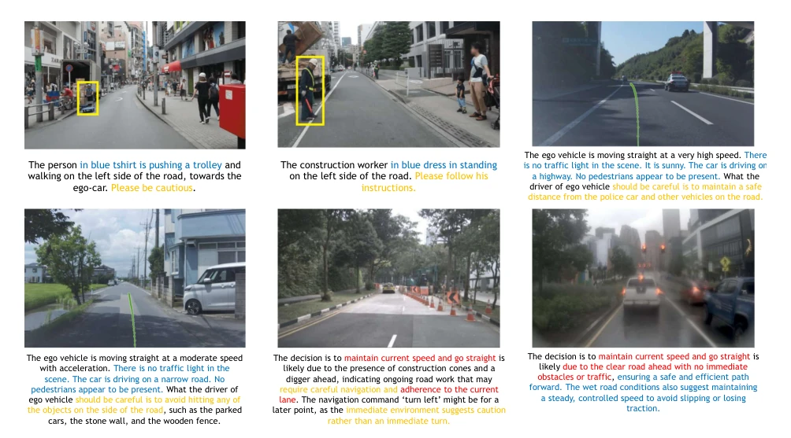
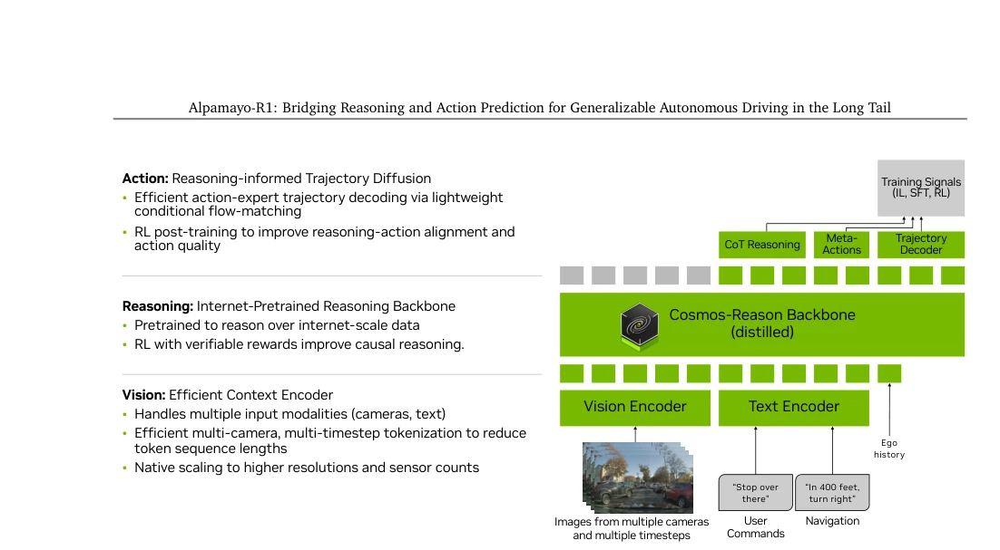
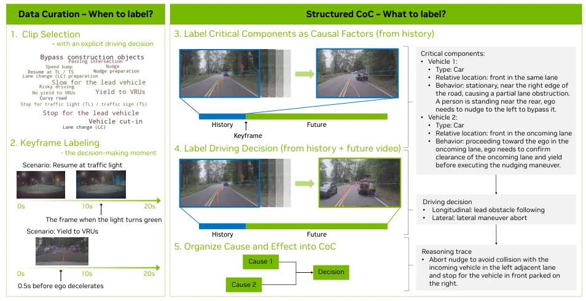
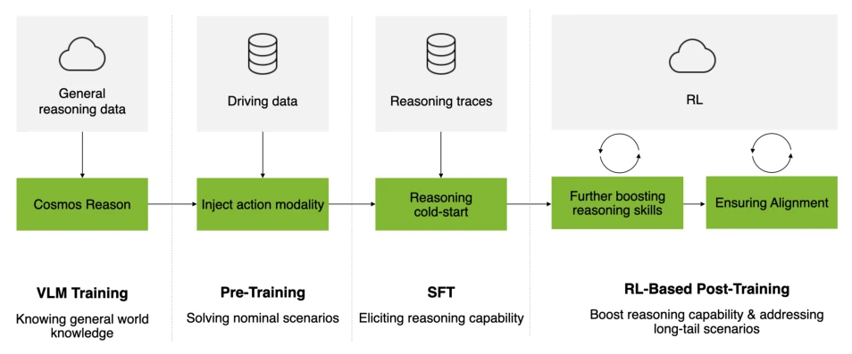
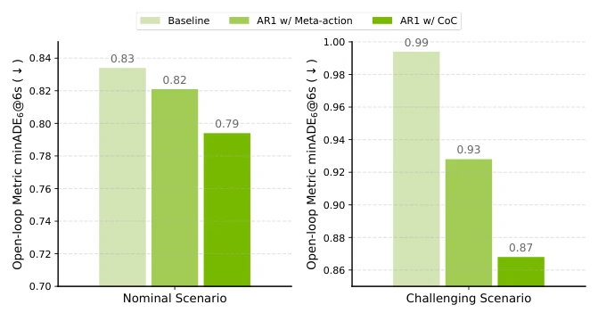
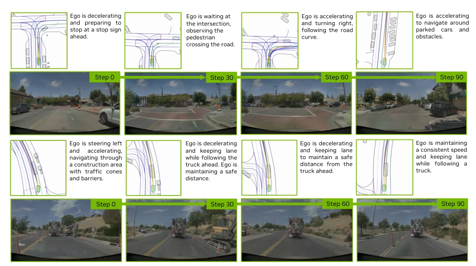
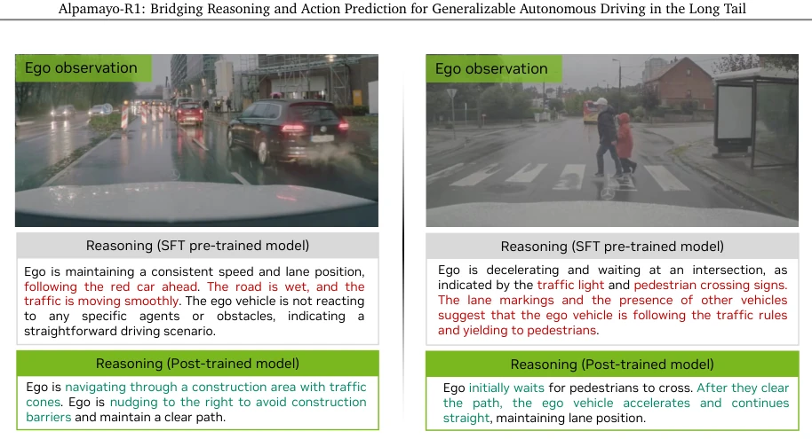
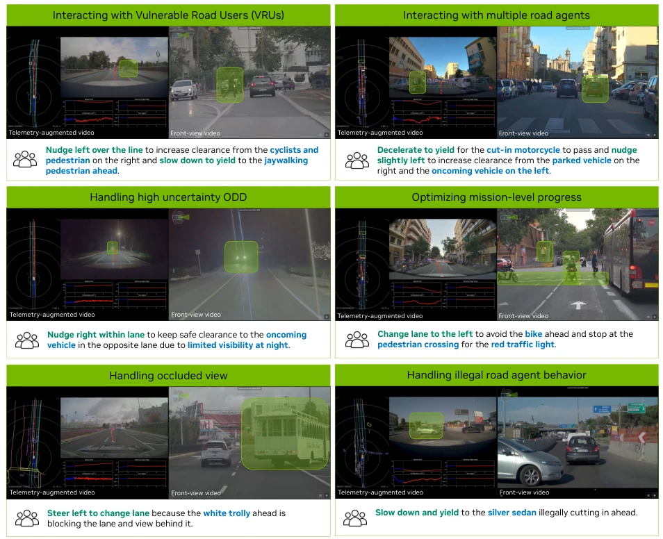
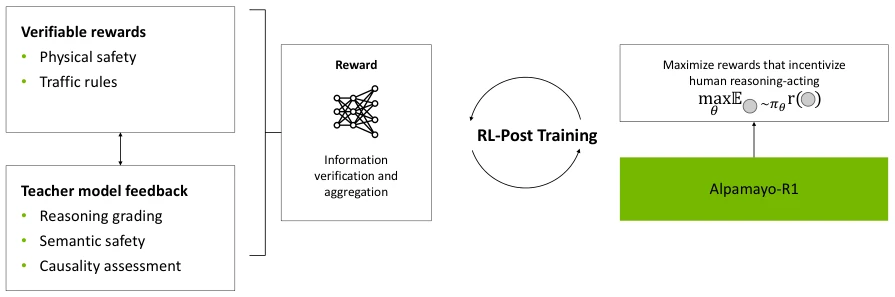
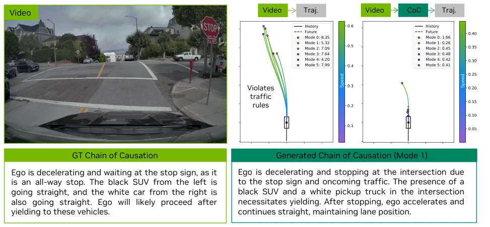

Nvidia's Alpamayo-R1 attempts to inject a "soul" into autonomous driving E2E models using "causal chains"; this approach is indeed more reliable than pure trajectory prediction in long-tail scenarios. A 99ms latency is considered low cost in the inference era, but the term "long-tail generalization" is overused; true gold fears no fire, so it depends on real vehicle data. The CoC dataset is a highlight; forcing causal associations prevents the model from "authoritatively fabricating nonsense". However, relying on the Cosmos-Reason base and RL fine-tuning, the engineering deployment cost is not low, and since simulation data (AlpaSim) accounts for a large proportion, whether real vehicle performance can be fully replicated remains to be seen. Overall, this is a highly interpretable technical route, but do not expect it to solve all Corner Cases, after all, the complexity of the physical world far exceeds simulation.
Although end-to-end autonomous driving is fast, it is extremely fragile in safety-critical long-tail scenarios; lack of causal understanding leads to poor generalization [6]. Existing VLA models either lack explicit reasoning or have reasoning processes that are free and loose, unable to be strongly associated with actions [12]. For example, existing CoT data often contains vague descriptions or causal confusion (such as using future information) [2]. This leads to unreliable decision-making by the model in complex scenarios, making it difficult to meet the stringent safety requirements of L4-level autonomous driving. We need a structured reasoning framework that connects observed evidence with specific driving decisions through causal chains, ensuring reasoning is not just an "explanation" but a "functional component" of control actions, thereby improving training efficiency and closed-loop performance, especially in long-tail events with sparse supervision.

Figure 2: Examples of reasoning traces exhibiting common issues in existing datasets (Malla et al., 2023; Chi et al., 2025; Arai et al., 2025). Text highlighted in yellow indicates vague behavior descriptions that fail to specify concrete driving decisions correlated with the trajectories. Text highlighted in blue denotes superficial reasoning, such as contextual observations that do not directly inform the ego vehicle’s decision. Red highlights indicate incorrect or causally inconsistent reasoning that contradicts the actual behavior of the ego vehicle.
The overall architecture is based on the Cosmos-Reason vision language model, extended to VLA. The pipeline is divided into two stages: data construction and training. In terms of data, the Chain of Causation (CoC) dataset is proposed; through mixed automatic annotation and human-machine collaboration, "driving decisions" and "causal factors" are forced to be annotated, avoiding causal confusion. In terms of model structure, a modular design is adopted: Vision Encoder processes multi-camera inputs, Cosmos-Reason generates CoT reasoning and discrete trajectory tokens, and finally continuous trajectories are generated through a Flow Matching-based diffusion decoder. The training strategy is divided into three steps: first inject action modality, then use SFT to stimulate reasoning, and finally use RL to optimize reasoning quality and action consistency. This design ensures reasoning is interpretable and physically feasible, while real-time performance is guaranteed through Flow Matching.

Figure 1: Overview of Alpamayo-R1 architecture. Multi-camera images and egomotion are processed by a vision encoder to produce visual tokens, which are fed into a VLM backbone (Cosmos-Reason) along with textual inputs. The model autoregressively generates chain-of-thought reasoning and discrete trajectory tokens. At inference, an action-expert decoder using flow matching converts the discrete trajectory tokens into continuous, kinematically feasible waypoints conditioned on the reasoning output.

Figure 3: Overview of the proposed structured CoC labeling pipeline, composed of five steps: (1) Clip Selection, where clips containing explicit driving decisions are selected, filtering out low-signal clips that offer limited causal information; (2) Keyframe Labeling, where the decision-making moment within each video clip is identified, minimizing potential causal confusion; (3-5) Structured CoC Labeling, to construct the final CoC and further mitigate causal confusion, we first annotate critical components from the observation while avoiding referring to causal factors in future frames, and then label the corresponding driving decision. We then compose a reasoning trace from driving decisions and causal factors in natural language.

Figure 5: Overview of the Alpamayo-R1 model training pipeline, consisting of three key stages: (1) Action Modality Injection (Sec. 5.1), (2) Eliciting Reasoning (Sec. 5.2), and (3) RL-Based Post-Training (Sec. 5.3).
Evaluated in AlpaSim simulation and real vehicle tests. The baseline is a pure trajectory prediction model. Metrics include planning accuracy, near-miss rate, and reasoning quality. Results show that AR1 improved planning accuracy by 12% on challenging cases, and near-miss rate decreased by 35% in closed-loop simulation. Post-RL training improved reasoning quality by 45% and consistency by 37%. Model performance continuously improved as it scaled from 0.5B to 7B. Real vehicle tests verified 99ms latency and urban deployment feasibility. Ablation studies show that CoC data and RL fine-tuning significantly improved long-tail scenarios, proving the effectiveness of structured reasoning. Additionally, the multi-stage training strategy effectively mitigated performance degradation in long-tail scenarios while maintaining real-time performance.

Figure 7: Compared to models that only output trajectories or only output meta-actions and trajectories, Alpamayo-R1 achieves improvements in both nominal and challenging scenarios.

Figure 9: Examples of closed-loop evaluation in AlpaSim (NVIDIA et al., 2025). The top row presents an intersection scenario, whereas the bottom row illustrates a construction scenario.

Figure 10: Post-training with the reasoning reward improves causal understanding and contextual reasoning in driving scenarios. Left: The base model overlooks construction barriers and fails to initiate evasive action, while the post-trained model correctly reasons that the ego should nudge right to avoid obstacles. Right: The base model misses that pedestrians are clearing the path, whereas the post-trained model correctly reasons that it is safe for the ego vehicle to accelerate.
其他图片Other Figures

Figure 4: Examples of our labeled CoC reasoning traces, where driving decisions and critical components are organized into CoC and highlighted correspondingly.

Figure 6: Overview of our RL-based post-training framework. We optimize three reward components: reasoning quality (via large reasoning model feedback), reasoning-action consistency, and trajectory quality, to align the model’s generated reasoning traces with its predicted actions.

Figure 8: Policy improvements via eliciting reasoning: Alpamayo-R1 generates a correct reasoning trace at an all-way stop sign intersection and yields to other vehicles that enter the intersection earlier than ego.